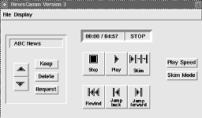

|
In a typical user scenario, one or more audio servers would be established which receive audio programs from various sources, process them, and then store them on disk. The user intermittently connects the hand-held to one of the servers through a high-bandwidth connection such as a television cable or an ISDN line. The server then selects a subset of the available recordings and down-loads them into the local memory of the hand-held (the server selects recordings based on the user's preferences and listening history). The user then disconnects the hand-held from the server and listens off-line.
The interface contains two sets of controls. The first set allows the user to select recordings and to indicate which recordings were interesting (the server uses this information to determine which recordings are likely to be of interest in the future). In certain cases where the server does not have sufficient confidence to down-load an entire recording to the hand-held, an automatic summary of the recording is generated and down-loaded instead. If the user indicates interest in the summary, the entire recording is down-loaded the next time the user connects to the server.
The second set of controls are used to navigate within recordings. The term "navigate" refers to the control of the play position within a recording. For example, the navigation control of a conventional tape deck usually includes a fast-forward and rewind button. In NewsComm the navigation controls use structural information about the audio to make searching and browsing more efficient.
Figure
1: The NewsComm hand-held device.
This paper focuses on three aspects of the design of the hand-held interface:
* What are the design criteria for a primarily non-visual interface for use in mobile situations?
* How can we make an interface which uses multiple structural descriptions of varying accuracy to assist in navigating an audio recording?
* What is the optimal balance between automatic and manual navigation when accessing large structured audio recordings?
A second motivation for creating NewsComm is to provide filtering mechanisms which help the user find information of interest. The need for filtering is steadily increasing since there is a rapidly growing number of information providers producing, distributing, and archiving audio programs in digital form. One example of this is the Internet Multicasting Service which multicasts (a method of sending real-time audio and video to one or more destinations on the Internet) and archives the audio proceedings of the U.S. House and Senate, producing over 20 hours of digital audio daily [5]. A second example is the Montage project at Sun Microsystems which provides lectures in audio over the Internet [10]. Additionally, as large existing information providers such as network news agencies begin providing on-line services, the amount of digital audio available will increase dramatically.
NewsComm filters information at two levels. At the first level, it relies on usage history and user preferences to select recordings to down-load from the audio server to the hand-held. At the second level of filtering, interactive navigation enables the user to listen to selected portions of interest from the down-loaded recordings.
We chose to build an audio device because audio is attractive for accessing information while the user's eyes and hands are busy. NewsComm is aimed at mobile users who are performing some other simultaneous task such as walking, exercising, or the morning commute. Visually impaired individuals are also potential users.
VoiceNotes is an interface for a hand-held portable audio note taking device which can be used to capture and organize short spoken notes [9]. NewsComm is also a hand-held device but uses only buttons to navigate audio recordings. The main difference between the two devices is the genre of audio they are designed to operate with. VoiceNotes is designed for short recordings made by the user which are later reviewed; NewsComm is designed for longer structured audio programs which are produced by information providers.
Whittaker et. al. have developed a system called Filochat which integrates handwriting and recorded audio in a portable system [11]. The system records audio and time-synchronized written notes. Audio can later be accessed by selecting a written note which automatically moves the play position to the audio which was recorded at the time the note was written. Similar to Filochat, NewsComm relies on annotated audio to find useful entry points into a long recording. However Filochat uses written annotations to index audio, while NewsComm relies on automatic audio processing. Also, Filochat is intended for retrieving previously heard material whereas NewsComm is designed for listening to previously unheard recordings.
Hindus et. al. designed a set of applications for capturing and structuring audio from two-person telephone calls, and a screen based interface for displaying and retrieving the contents of the conversations [4]. The conversations are annotated by using a simple audio detector to separate speakers talking over a telephone line. NewsComm is similar to this work since it also structures audio by annotating speaker changes. In contrast to Hindus's system, NewsComm uses a more sophisticated signal processing algorithm to locate speaker changes which will work on a much broader range of audio recordings. NewsComm is also a primarily non-visual interface, and designed to navigate longer recordings.
Kimber et. al. have built a system which automatically divides a multi-speaker recording into speaker segments and displays the information in a graphical browsing tool [6]. NewsComm also uses automatic speaker segmentation to index recordings. However, in contrast to Kimber's Hidden Markov Model based segmentation system, NewsComm uses a neural network approach [7]. Also, similar to Hindus's system, Kimber's system is designed to review meetings and conversations rather than listen to new material, and uses a screen based interface rather than a hand-held non-visual one.
The audio processor module in the server automatically finds two classes of features in each audio recording: pauses in speech, and speaker changes (points in the recording where the person talking switches). The locations of these features constitute a structural description of the recording. The audio and associated structural description are collectively referred to as structured audio. All audio in the server is structured by the audio processor and then stored in the audio library, a large network-mounted hard disk drive.
Figure
2: An overview of the audio server and hand-held playback device.
Users can down-load structured audio from the server by connecting their hand-held to the audio manager. The audio manager decides which recordings to down-load based on a preference file which the user has previously specified, and also based on the recent usage history uploaded from the hand-held. The preferences file specifies interest rankings for each available source of audio. The server uses these rankings to determine which recordings to down-load to meet the user's interests. The preference file is currently created by editing a text file manually. The usage history is generated as a result of interaction with the hand-held interface and is discussed in the section on the design of the interface.
Once the down-load is complete, the user disconnects and interactively accesses the recordings using the navigation interface of the hand-held. The playback manager in the hand-held uses the structural description of the audio to enable efficient navigation of the recordings. It does this by ensuring that when the user jumps forward or backward in a recording, the jump "lands" in a meaningful place. The structural description of each recording contains the location of all suitable jump destinations within the recording. The interface enables the user to efficiently skim and search audio, and to listen selectively to portions of interest.
The locations and lengths of all pauses in a recording constitute a structural description of a recording. The locations of all speaker changes constitute a second description of the same recording. In general there may be any number such descriptions derived from various automatic and manual annotation methods.
We have developed a general framework for combining any number of such descriptions. The framework provides a standard programming interface to the underlying description(s) so that interface design can be isolated from the class and number of structural descriptions available.
We now define a set of terms which are used in the remainder of this paper. A jump location is a location in the recording selected using the structural representation framework. A jump is made when the play position is moved to the next or previous jump location (relative to the current play position). A highlight is a short segment of audio following a jump location. Skimming is a mode of playback in which only the highlights of the recording are played in sequence; the portions of the recording between highlights are skipped. The jump range is the maximum distance a jump can move the play position from its current position. The jump granularity is a qualitative measure of the spacing between jumps in a recording. Short jumps result in fine granularity; long jumps result in coarse granularity.
The framework performs a weighted sum of available descriptions and then selects jump locations at any desired granularity based on the jump range [8]. For example, in the current system the weight of each pause is proportional to its length reflecting our assumption that long pauses precede interesting events in an audio stream. Speaker changes are assigned the highest possible weight to assure that they are always selected as jump locations (assuming the jump granularity is fine enough to hit every speaker change in the recording).
(1) Enable natural and efficient audio navigation
(2) Be small enough to be held and controlled with one hand
(3) Require little or no visual attention to operate, especially for common operations such as jumping within a recording
(4) Facilitate selecting recordings and communicating simple requests to the server.
The first and fourth designs are comparable in complexity, however the functionality and usability improved considerably. User studies indicate that users easily understand and use the final interface whereas the initial interfaces are virtually unusable. As developers we exhibited a tendency to expose increasing control to the underlying indexing abilities of the system but usability studies consistently showed that a simple interface retaining only basic indexing control was preferred.
The window at the top displays the structural descriptions of the audio, current play position and jump range setting, and a "trace" of the play position. The structural description of the recording is displayed by vertical bars indicating the locations of speaker changes and pauses. The length of the bar is proportional to the duration of the pause, and speaker changes are indicated in red. The display resembles Degen et. al.'s audio display [3], although in contrast to that system, the feature markings in this display are generated automatically by the pause and voice analysis software. A black diamond tracks the play position in real-time. A trace of the areas where the diamond has traversed is recorded using a black bar which serves as a visual reminder of which parts of the recording have been played. A square bracket centered on the diamond shows the current jump range.
Five buttons are arranged in a row in the center of the window. Three of the buttons provide conventional rewind, stop and play operation. A fourth button jumps backwards to the previous jump location, and the fifth button puts the system into skim mode. Finally, two sliders enable the user to set the jump-range and playback speed.
Figure
3: Iteration 1 of the interface includes (from top to bottom) a display of
the structural description, five navigation buttons, and two parameter control
sliders.
Usability tests were made on a 20 minute BBC news recording. During initial visual inspection the subjects correctly guessed the functions of the conventional stop, play and rewind buttons, but failed to guess the function of the jump-back and skim buttons.
To our surprise, after trying the interface on the sample audio, none of the subjects learned the function of the skim mode. The two main reasons for the confusion were (1) there was no way to know that a new mode was being activated, and (2) the pause separated highlights are semantically unconnected and difficult to follow (some subjects thought the system was malfunctioning!). When given a simple search task, the subjects used a combination of REWIND, JUMP-BACK, and PLAY to locate specific parts of the recording. The SKIM function was not used.
Subjects were asked what they would like change in the interface. They all asked for direct manipulation of the play position by clicking and dragging the diamond icon to a different position.
* The audio display window was replaced with a single line text display which shows the duration of the recording and the current play position. We found these to be the two most important pieces of information in the previous display. We limited the display to one text line so that it can be implemented using a small LCD in the final hand-held hardware. The text display also indicates the current mode of operation (stop, play, or skim) to help reduce the confusion over the skim mode in the first design.
* An auditory icon of sped-up speech was added to all jump functions. The duration of the icon is logarithmically proportional to the length of the corresponding jump. Whenever the user jumps, or when automatically jumping between highlights in the skim mode, the icon is played to indicate movement of the play position.
* A new slider was added to control the length of highlights (which was fixed in the first iteration), and a new button was added to jump-forward.
* The button layout was re-organized with modal buttons in one row, and navigation buttons in a second.
Figure
4: In Iteration 2 the display was reduced to a small text display (above
the navigation buttons). The functionality, icons, and layout of the
navigation buttons were redesigned; a new slider for controlling highlight
length was added.
Icons and labels were also redesigned to reduce confusion (based on observations from Iteration 1 tests). For example, in the first design the PLAY icon is a triangle pointing right, and the JUMP-BACK a triangle pointing left. This opposite-symmetric choice led to confusion (users guessed pressing the JUMP-BACK would play the audio backwards!). The JUMP-BACK icon in Iteration 2 was redesigned to differentiate it from the play operation.
Another four subjects tested this new design. There was a clear improvement in the usability of the buttons. Subjects quickly understood the distinction between modal and navigational control, although the function of the skim mode was less obvious. Subjects easily understood the purpose of the single line display.
The auditory icon for jumping was found useful and intuitive. One subject commented that the jump-back sound should be different from the jump forward sound.
The skim mode continued to cause confusion and was not used in the sample search tasks. It became clear that adding controls (such as the highlight length slider) only made the skimming function more difficult to use.

Figure
5: In Iteration 3 sliders were replaced with two buttons which cycle
through preset (discrete) settings of the three control parameters. A new set
of controls and display were added (on the left) to select and manage multiple
audio recordings.
Two major changes were made in the third and final software-only design:
* The sliders were replaced with two buttons labeled PLAY-SPEED and SKIM-MODE. Pressing PLAY-SPEED cycles the play speed through three settings (1.0, 1.4, and 1.8 times faster than normal speed). SKIM-MODE cycles through three combinations of settings of the highlight-length and jump-range. The three skim mode settings correspond to skimming with fine, medium, and course granularity.
* A new set of buttons and line of display was added to support multiple recordings (fulfilling design objective 4). The display shows the name of the current recording. Up and down arrow buttons (on the left) enable the user to move through a list of available recordings. The interface also announces the name of the new recording using prerecorded audio.
The KEEP and DELETE buttons let the user mark recordings to be retained or discarded at the next connection with the server. The REQUEST button is used to request full versions of recordings when only a summary of the recording has been down-loaded. These three buttons could not be tested in usability studies for Iteration 3 since the audio server had not been implemented at that time, but subsequent tests of the buttons in the hardware prototype were successful.
Summaries were introduced in this version. A summary of a recording is a concatenation of only the highlights of the original recording, with 200ms 200Hz tones separating each highlight. This is similar to the summaries generated by Chen et. al. based on pitch analysis [2]. The summary is generated by the audio server and is usually sufficient for the listener to decide whether he or she wants to down-load the entire recording during the next connection to the server.
Tests of Version 4 suggested that the skim mode was still unclear, and users continued to feel a need for more direct navigational control.
In all of the first three designs, the search engine used to find jump locations computes the locations relative to the current play position. We found that this caused confusion since jumping back twice from slightly different originating locations will not necessarily land the play position in the same place. The result is that the jumping function seems to have inconsistent behavior.
The granularity of jumps tied to the COARSE-JUMP buttons depend on the type of audio being played and is set manually in the audio server. For example, a granularity of approximately 30 second jumps using a 60 second jump range was found appropriate for navigating newscasts. The FINE-JUMP buttons are tied to jumps roughly 5 seconds apart and usually correspond to grammatical sentence breaks. For two person interview shows we found a jump range of 120 seconds to be appropriate for the coarse granularity jumps (we used the same fine-jump granularity for news shows and interviews).
Although the skim mode was removed, a similar function can be achieved by holding down any of the jump buttons; doing so plays 0.5 second segments of the recording and then jumps automatically to the next jump location. This is similar to the scan operation of a CD player and is understood easily by users.
Tests of this interface have indicated that the four button interactive navigation is preferred to an automatic skim mode since the system never initiates a jump automatically (which causes a feeling of lack of control). The two levels of granularity seem sufficient for navigation; there seems to be no need for more elaborate control over the jump algorithm afforded by the earlier more complex interfaces.
The fixed jump locations were a major improvement to the usability of the device. The locations serve as landmarks within the recording which can be revisited as points of reference.
We have presented the design of a simple interface for navigating audio recordings. Usability tests were essential in guiding the design process. An important lesson learned from these tests was that although the authors had a tendency to design powerful
Figure
6: Details of the top, front and right sides of the final hand-held which
incorporates Iteration 4 of the interface design. The front panel houses the
recording selection and management controls and a 2x16 character LCD screen,
and the right side houses the navigation controls. The case is made of soft
leather and measures 7.5"(h) x 3.75"(w) x 2.0"(d).
but complex interfaces, in most cases users preferred a less powerful, simpler interface. For example, early versions of the interface include a skimming mode which plays selected highlights of a recording. Additional controls enable the user to adjust parameters of the skimming mode. Although users generally agreed that the skimming mode is useful, they consistently preferred a simpler interface with no second modality; the users could achieve the same affect of skimming by manually pressing a jump forward button after hearing each highlight. Although this method of skimming requires more input from the user, it reduces the confusion of having a hidden mode, and eliminates the feeling of an interface which "takes over" the navigation task.
In the final design the two levels of jumping provided an ideal balance of direct control and intelligent jumping. The coarse grain jumps usually move the play position to a meaningful new entry point in the audio and the variable duration fast-forward sound provides a cue of how far the position moved. However, due to the limited accuracy of the speaker indexing algorithm, the coarse jump locations are sometimes chosen in poor locations. The fine grain jump controls provide a highly interactive and reliable second level of control which is easily used to correct errors in the coarse jump selection. We found that users naturally combined the two levels of jumps.
The framework for combining annotations was successfully used to combine the output of the speaker indexing algorithm and pause detection. The framework was used to provide jump locations for four different interface designs which demonstrates the separation of interface design from the underlying representation of the media. The highly interactive nature of the interface overcomes inaccuracies in the annotations; users can compensate for poor jump selection by using finer granularity direct control.
The two-stage interface implementation strategy was found to be an excellent approach and we would recommend it to any similar hardware interface design. Software implementation allows the designer to explore options which would be to costly to consider in a hardware-only design strategy.
Time scale modification can be added to the hand-held device as an additional method of speeding up access to recordings.
The annotation framework can combine any number of structural descriptions. In the current system only two types of annotations have been demonstrated (speaker changes and pauses). Other possible additional annotations include pitch based locations, topic changes (located by modeling the output of a speech recognizer run on the audio), key word spotting, and human editing.
The current implementation of NewsComm supports only simple notions of user history and preferences. In the future, the user history may include tracking which portions of a recording are skipped and which portions are heard and user preferences could include topics and keywords which are of interest.
Although primarily non-visual, NewsComm uses an LCD to display the name and length of recording, and the current play position. We are exploring audio-only solutions to each of these display components based on a combination of additional sound cues and interactive query controls.
This work was supported by the MIT News in the Future Consortium.
2. Chen, F., Withgott, M. "The Use of Emphasis to Automatically Summarize a Spoken Discourse". Proc. Int. Conf. Acoustics, Speech and Signal Processing. Vol. 1, pp. 229-232, 1992.
3. Degen, L., Mander, R. and Salomon, G. "Working with Audio: Integrating Personal Tape Recorders and Desktop Computers". Proc. of CHI `92, pp. 413-418, ACM, 1992.
4. Hindus, D., Schmandt, C., Horner, C. "Capturing, Structuring, and Representing Ubiquitous Audio." ACM Trans. on Information Systems, Vol. 11, No. 4, pp. 376-400, 1993.
5. Internet Multicasting Service, URL: http://town.hall.org/.
6. Kimber, D., Wilcox, L., Chen, F., Moran, T. "Speaker Segmentation for Browsing Recorded Audio". Proc. of CHI `95, pp. 212-213, ACM, 1995.
7. Roy, D. "Speaker Indexing Using Neural Network Clustering of Vowel Spectra", upcoming issue of International Journal of Speech Technology, 1995.
8. Roy, D. NewsComm: A Hand-Held Device for Interactive Access to Structured Audio. Masters thesis, MIT Media Laboratory, 1995.
9. Stifelman, L., Arons, B., Schmandt, C. "VoiceNotes: A Speech Interface for a hand-held voice notetaker". Proc. of CHI '93, pp. 179-186, ACM, 1993.
10. Tang, J.C. & Rua, M. "Montage: Providing teleproximity for distributed groups". Proc. of CHI `94, pp. 37-43, ACM, 1994.
11. Whittaker, S., Hyland, P., Wiley, M. "Filochat: Handwritten Notes Provide Access to Recorded Conversations". Proc. of CHI '94, pp. 271-279, ACM, 1994.